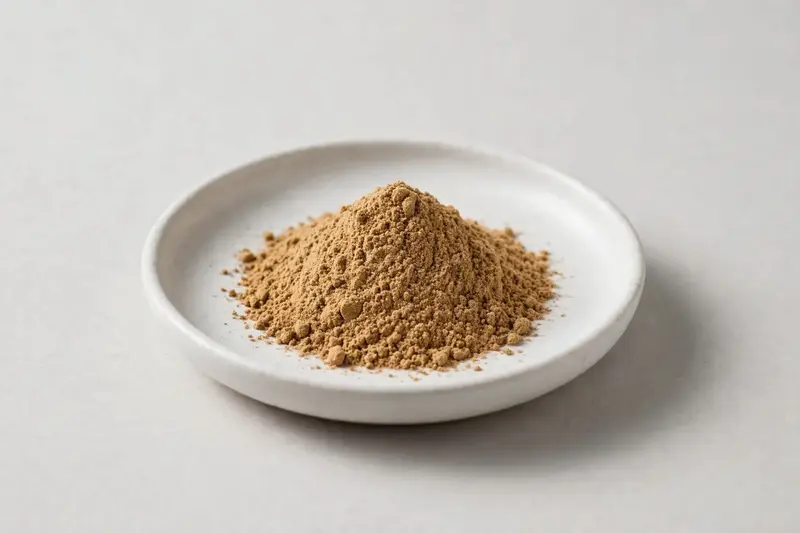

Porcini Extract — a fruiting-body mushroom extract for umami-rich nutrition and culinary-medicinal crossover formulations.

Overview
Porcini extract is produced from Boletus edulis fruiting body and is used where mushroom flavor, nutrition and culinary-medicinal crossover positioning come together. Buyers request it as a powder for soups, seasonings, functional foods and capsule blends. As a Xi'an-based trading company, we source through vetted partner producers and confirm part used, ratio and organoleptic expectations before any supply commitment.
Specifications below reflect commonly requested options in the market — not a stock list. Share your target spec and we'll confirm exactly what we can supply, honestly.
| Specification | Details |
|---|---|
| Botanical identity | Porcini (Boletus edulis) extract powder from fruiting body |
| Marker compound | Commonly requested spec grades: 4:1 to 10:1 fruiting-body extracts; beta-glucan or polysaccharide standardized grades also traded |
| Appearance | Tan to brown, sometimes dark brown fine powder |
| Mesh size | Typically 80–100 mesh (confirm per inquiry) |
| Testing | COA/TDS arranged on request; scope agreed per your spec |
Applications
Documentation
We don't claim in-house labs or certifications we don't hold. COA and TDS documents can be arranged on request, and testing scope is agreed against your specification before supply.
FAQ
Related products
Agaricus blazei
Key marker: Polysaccharides
View specs →Poria cocos
Key marker: Polysaccharides
View specs →Pleurotus ostreatus
Key marker: Polysaccharides
View specs →Phellinus linteus
Key marker: Polysaccharides
View specs →Send your target spec and volumes — we'll respond with a tailored quotation.
Request a Quote